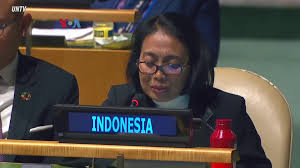
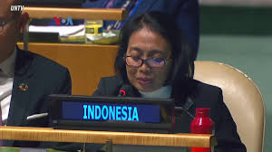

Indonesia terlibat dalam beberapa program multilateral dengan negara lain untuk mendorong kesetaraan gender. Indonesia merupakan anggota Perserikatan Bangsa-Bangsa dan aktif mengikuti konferensi dukungan terhadap upaya kesetaraan gender dan upaya penghapusan kekerasan terhadap perempuan, serta upaya perbaikan di tingkat nasional yang tercermin dalam penurunan Indeks Ketimpangan Gender menjadi 0.421 di tahun 2024. Indonesia juga berkolaborasi dengan UN Women termsuk advokasi dan dukungan bagi pemerintah untuk mencegah kekerasan terhadap perempuan.